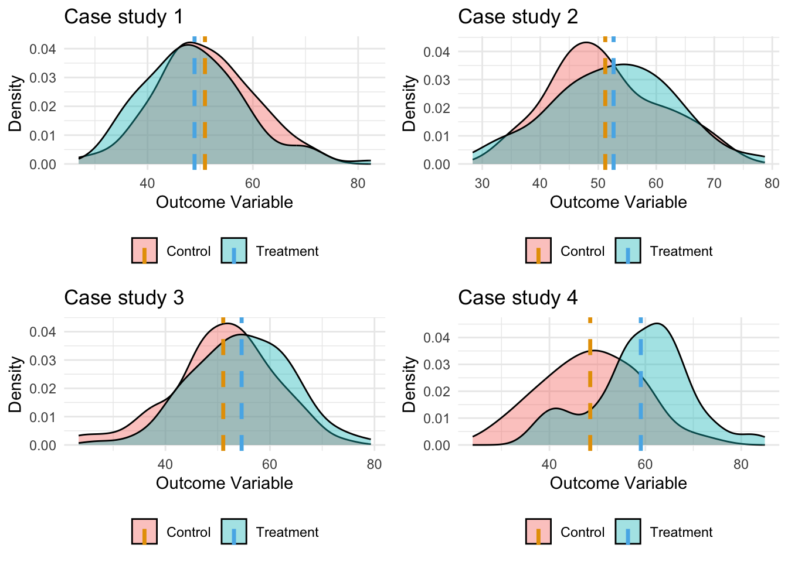

Calculate and combine the effect-sizes
2024-09-28
Chapter 1 What is an Effect Size?
An effect size is a metric that quantifies the direction and magnitude of an experimental or observational effect. It is essential in meta-analysis as it standardizes results across different studies to aggregate results.For example, if you are comparing the performance of two treatments (e.g., a control vs. a new intervention), the effect size tells you how much better or worse the new intervention performs compared to the control.Effect size should have the folowing characteristics:
- Extracted directly from publications or calculated from reported data.
- Standardized to be comparable across multiple primary studies.
- Reliable: Effect sizes should accurately represent the underlying data (e.g., caution is needed when using ratios with low denominators).
Effect sizes come in various forms depending on the type of data and research question (e.g., standardized mean difference, odds ratios, correlation coefficients).
1.1 Visual representation of effect-sizes
Effect sizes are crucial for understanding how different treatments or conditions compare to each other in a study. To grasp their significance, it is helpful to visualize them, as graphical representation allows us to clearly see how much two groups overlap or differ. By illustrating varying levels of effect sizes, we can better understand what these numerical values mean in a practical context. Example Scenario: Comparing a Treatment vs. Control Group
Let’s consider a hypothetical study where researchers are testing the effectiveness of a new treatment compared to a control group. For each group, a series of measurements were collected, allowing us to estimate the average value and the statistical distribution for each population.
The goal is to determine if the treatment group exhibits a significant improvement or change compared to the control group. Here, the effect size is a standardized measure that quantifies how much the two groups differ. The larger the effect size, the more distinct the two groups are. Smaller effect sizes suggest that the two groups are relatively similar, while larger effect sizes indicate a more substantial difference

1.1.1 Different Metrics for Measuring Effect Sizes
Effect sizes can be calculated using a variety of metrics depending on the type of data and the comparisons being made. Below, we present a table showing some of the most common effect size metrics, calculated for the same hypothetical data used in the visual demonstration above.
| Metric | Formula/Definition | Interpretation |
|---|---|---|
| Mean Difference | Mean_Treatment - Mean_Control | Difference in mean values between the groups. |
| Standardized Mean Difference (SMD) | (Mean_Treatment - Mean_Control) / SD_pooled | Cohen’s d or Hedges’ g for continuous variables. |
| Odds Ratio (OR) | (Odds_Treatment / Odds_Control) | Odds of an event occurring in the treatment vs. control. |
| Log Odds Ratio | log(OR) | Stabilized variance and more symmetrical distribution. |
| Risk Ratio (RR) | (Risk_Treatment / Risk_Control) | Ratio of the probability of an event between groups. |
| Log Risk Ratio | log(RR) | Similar to log OR, stabilizing variances. |
Using the simulated data above, let’s compare the groups using several of these metrics:
| Effect Size Metric | Case study 1 | Case study 2 | Case study 3 | Case study 4 |
|---|
| Mean Difference | 0 | 3.15 | 5.27 | 7.86 |
| Standardized Mean Difference (SMD) | 0 | 0.31 | 0.52 | 0.81 |
| Odds Ratio (OR) | 1 | 1.28 | 1.91 | 3.75 |
| Log Odds Ratio | 0 | 0.25 | 0.65 | 1.32 |
| Risk Ratio (RR) | 1 | 1.18 | 1.40 | 2.25 |
| Log Risk Ratio | 0 | 0.17 | 0.34 | 0.81 |
These values illustrate how different metrics capture varying aspects of the comparison between groups. We will delve into these metrics in greater detail in the next sections, exploring when and why to use each one based on your research question and data type.
Overall, effect sizes provide a powerful way to quantify the differences between groups, and choosing the appropriate metric ensures accurate and meaningful interpretations in meta-analyses and research synthesis.
1.1.2 How to Measure Variability
Variability in effect sizes can be measured using several approaches:
Confidence Intervals (CIs): These provide a range within which the true effect size is likely to fall. A 95% CI indicates that if the study were repeated many times, 95% of the calculated intervals would contain the true effect size.
Standard Error (SE): This metric quantifies the amount of variation in the effect size estimate due to sampling error. A smaller SE suggests that the effect size is a more reliable estimate.
Heterogeneity Statistics: In meta-analyses, measures like I² quantify the degree of variability among effect sizes from different studies. A high I² value indicates substantial variability, suggesting that differences between studies may not be due to chance alone.
1.1.3 What Variability Means
High Variability: Suggests that the effect of the treatment varies significantly across different studies or populations. This could indicate that certain factors (like participant characteristics or study design) influence the effectiveness of the intervention.
Low Variability: Implies that the effect size is consistent across studies, leading to stronger generalizations about the treatment’s effectiveness.
By understanding and measuring the variability of effect sizes, researchers can provide more nuanced interpretations of their findings and enhance the credibility of their conclusions. This approach leads to better-informed decisions in both research and practice.
1.1.4 Comparison of Effect Size and p-Value
Understanding the Concepts
Effect Size: This metric quantifies the magnitude of a treatment effect or the strength of an association. It provides a clear indication of how substantial a difference is between groups, regardless of sample size. A larger effect size suggests a more meaningful difference, helping researchers understand the practical significance of their findings.
P-Value: The p-value measures the probability that the observed results occurred by chance under the null hypothesis. It helps determine whether to reject the null hypothesis. A low p-value (typically < 0.05) indicates that the observed difference is statistically significant, but it does not inform us about the size or importance of the effect.
Key Differences
Focus:
Effect Size: Emphasizes the magnitude of the effect, providing context to the results.
P-Value: Emphasizes whether the effect is statistically significant, without indicating its size.
Interpretation:
Effect Size: A high effect size indicates a strong difference, while a low effect size suggests the groups are similar. It informs researchers about practical implications.
P-Value: A p-value tells us whether we can reject the null hypothesis. A significant p-value doesn’t necessarily imply a large or important effect.
Dependence on Sample Size:
Effect Size: Remains stable regardless of sample size, providing a consistent measure of difference.
P-Value: Can be influenced by sample size; larger samples can yield statistically significant p-values even for trivial differences.